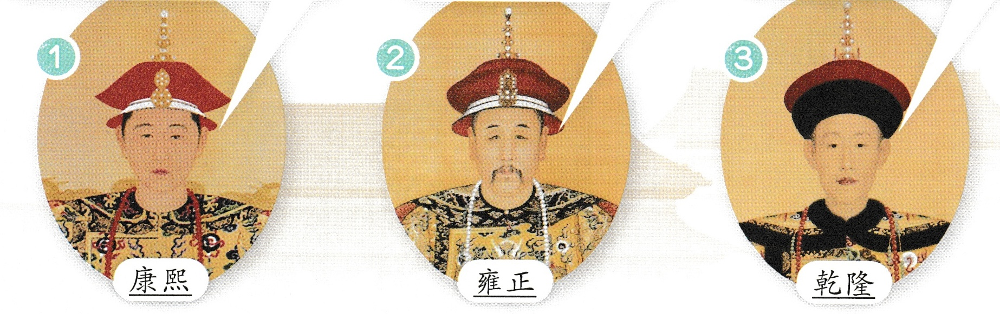
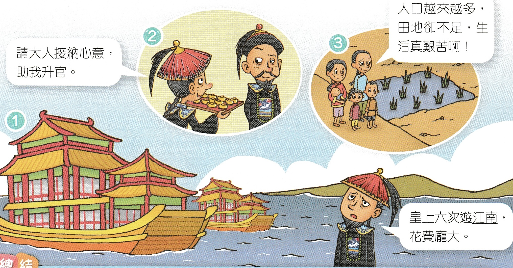
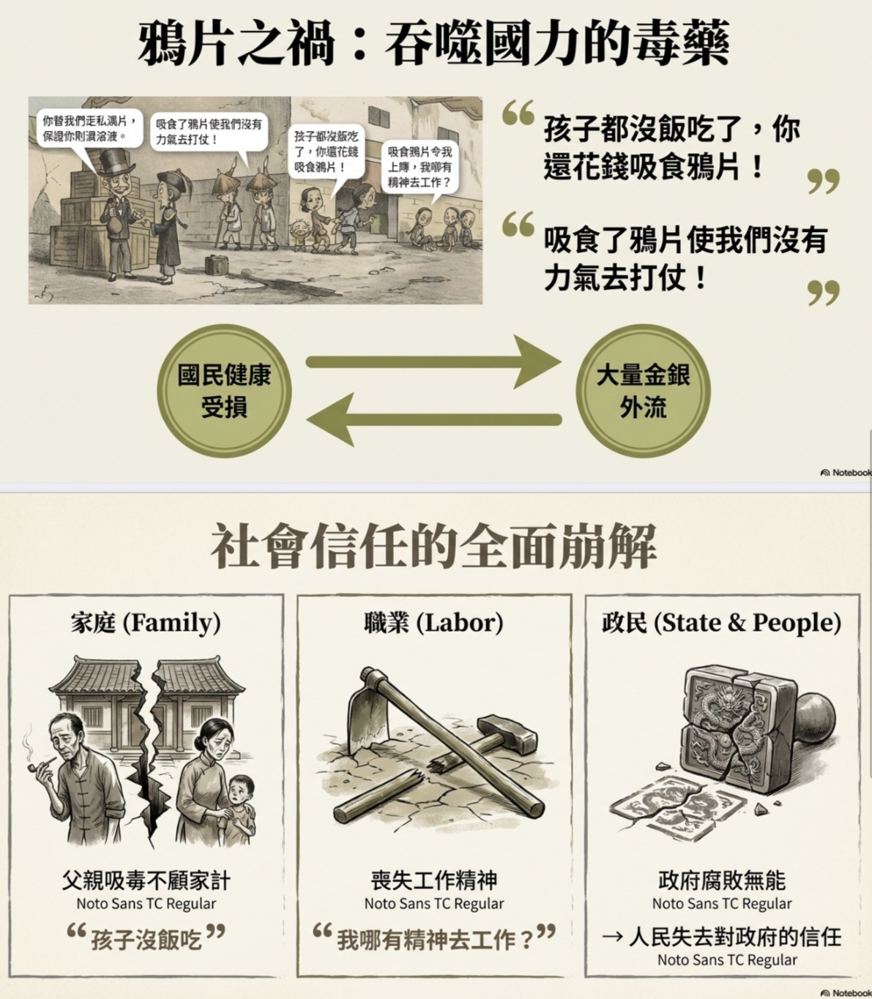
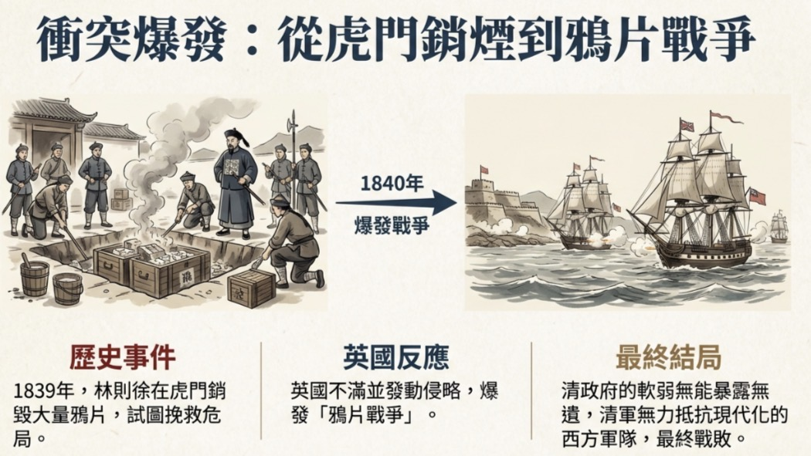
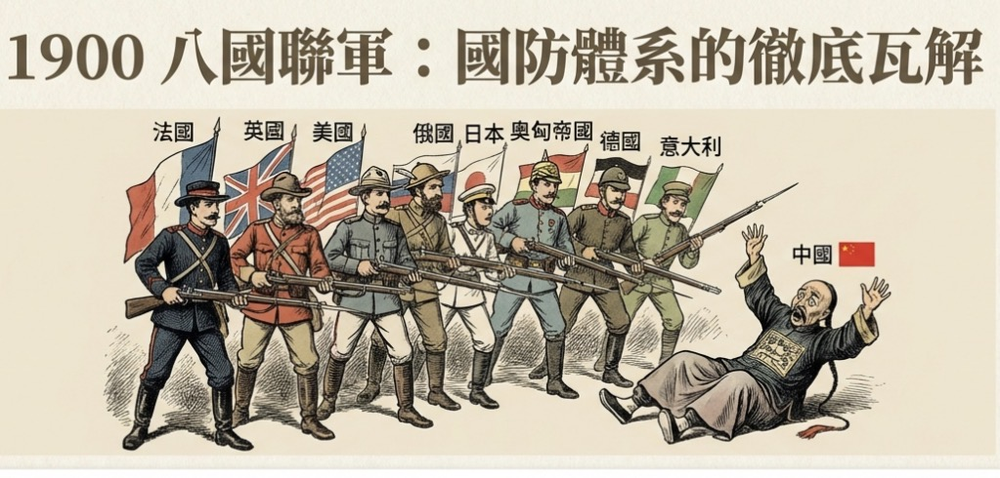
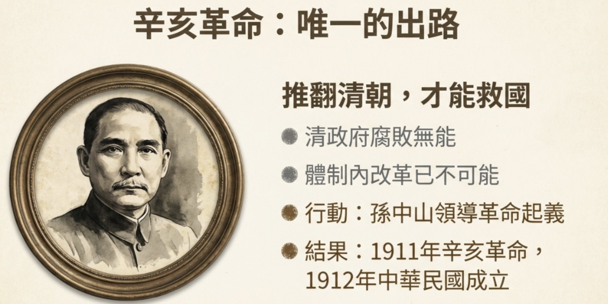
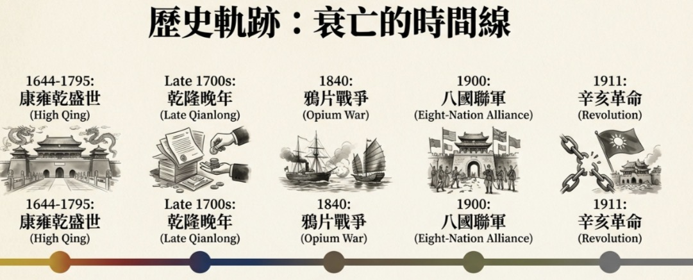

清朝是由滿族人建立的中國最後一個皇朝。早期三位皇帝康熙、雍正、乾隆在位時，國家呈現盛世局面。
| 皇帝 | 主要施政與作為 | 盛世原因分析 |
|---|---|---|
| 康熙 | 嚴懲貪官；掃除貪污風氣；平定準噶爾叛亂 | 鞏固國家統治；穩定內部局勢；擴張版圖 |
| 雍正 | 任用人才不分民族；提升行政效率 | 政策開明，促進社會穩定和經濟發展 |
| 乾隆 | 六次南巡江南；大量花費 | 文化繁榮與國力強盛；但晚年開始出現揮霍與國力衰退 |
清朝是由滿族人建立的中國最後一個皇朝。早期三位皇帝康熙、雍正、乾隆在位時，國家呈現盛世局面。
| 皇帝 | 主要施政與作為 | 盛世原因分析 |
|---|---|---|
| 康熙 | 嚴懲貪官；掃除貪污風氣；平定準噶爾叛亂 | 鞏固國家統治；穩定內部局勢；擴張版圖 |
| 雍正 | 任用人才不分民族；提升行政效率 | 政策開明，促進社會穩定和經濟發展 |
| 乾隆 | 六次南巡江南；大量花費 | 文化繁榮與國力強盛；但晚年開始出現揮霍與國力衰退 |

| 影響因素 | 說明 |
|---|---|
| 人口壓力 | 人口持續增加，但土地資源有限，造成糧食短缺 |
| 政府財政問題 | 大量花費於乾隆南巡及宮廷生活，導致財政負擔加重 |
| 貪污問題 | 朝廷貪污風氣猖獗，削弱政府執行力 |

英國商人在中國販賣鴉片，導致大量國民沉迷吸食，造成國家健康和軍事戰鬥力下降，經濟損失嚴重。
鴉片是什麼嗎？鴉片是毒品，會危害健康，我們要向毒品說不。
| 影響層面 | 描述 |
|---|---|
| 健康 | 國民吸食鴉片危害身體，影響生育和生活質量，無力工作。 |
| 經濟 | 花費大量金錢購買鴉片，白銀流向外國，造成國庫空虛。（財政外流和貧困） |
| 軍事 | 吸食者體力和精神下降，軍隊戰鬥力減弱 |
| 其他 | 官商勾結走私鴉片，遺政府日趨腐敗。 |

| 結果 | 內容 |
|---|---|
| 戰爭結果 | 1842年，清政府戰敗 |
| 《南京條約》條款 | 賠款英國大額銀兩；開放廣州、上海等五個通商口岸；香港島割讓英國管治 |

| 條約名稱 | 時間 | 主要內容與影響 | |
|---|---|---|---|
| 《北京條約》 | 英法聯軍之役 | 1856-1860年 | 增開天津為通商口岸，賠款英法聯軍，割讓九龍半島給英國管治。 |
| 《馬關條約》 | 中日甲午戰爭 | 1894-1895年 | 向日本大額的賠款。割讓遼東半島、台灣及澎湖列島給日本。增開四個通商口岸。 |
| 《辛丑和約》 | 八國聯軍之役 | 1900-1901年 | 向八國聯軍大額賠款，拆除大沽口到北京防禦炮台，並允許列強/聯軍駐軍［在北京至山海關一帶。 |
[P6-Q1]這些條約共同特點：
| 條約名稱 | 與香港相關的條款 |
|---|---|
| 《南京條約》 | 將香港島割讓給英國 |
| 《北京條約》 | 將九龍半島割讓給英國 |
這些條約使中國主權嚴重受損，國勢愈加衰弱。

| 類別 | 內容 |
|---|---|
| 內部問題 | 政府腐敗無能，貪污盛行，無力解決社會經濟矛盾 |
| 外部侵略 | 列強侵略連連，簽訂大量不平等條約，割地賠款，軍事被迫弱化 |
孫中山在香港有密切歷史活動與革命組織。透過香港的國際環境和華人社群，推動革命事業。

| 時期 | 國勢狀況 | 主要原因與事件 |
|---|---|---|
| 清朝早期 | 國勢強盛 | 康熙、雍正、乾隆三帝治國有方，內政穩定，版圖鞏固 |
| 清朝中後期 | 國勢衰弱 | 鴉片問題嚴重，英國發動鴉片戰爭，清政府戰敗，被迫簽訂多項不平等條約 |
| 清朝末年 | 滅亡 | 政府腐敗無能，列強侵略加劇，孫中山領導革命成功，建立中華民國 |
